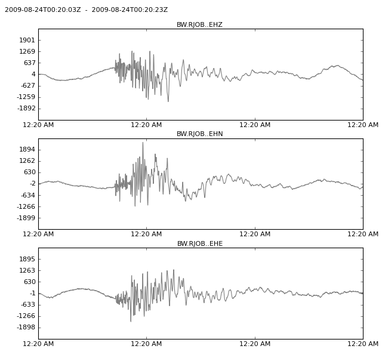
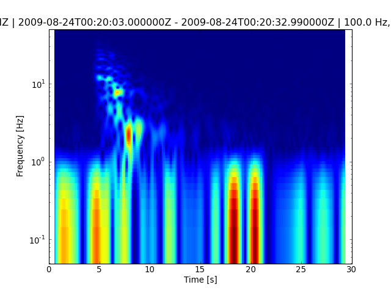
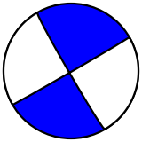
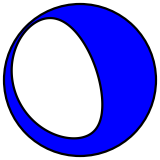
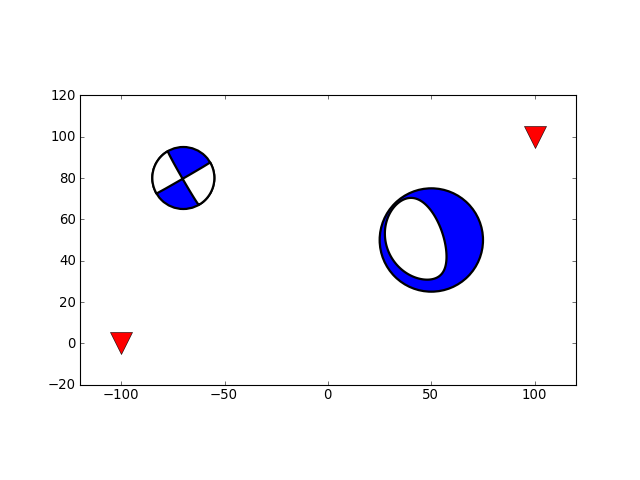

This module provides routines for plotting and displaying often used in seismology. It can currently plot waveform data, generate spectrograms and draw beachballs. The module obspy.imaging depends on the plotting module matplotlib.
| copyright: | The ObsPy Development Team (devs@obspy.org) |
|---|---|
| license: | GNU General Public License (GPL) (http://www.gnu.org/licenses/gpl.txt) |
This submodule can plot multiple Trace in one Stream object and has various other optional arguments to adjust the plot, such as color and tick format changes.
Additionally the start- and endtime of the plot can be given as UTCDateTime objects.
Examples files may be retrieved via http://examples.obspy.org.
>>> from obspy import read
>>> st = read()
>>> print(st)
3 Trace(s) in Stream:
BW.RJOB..EHZ | 2009-08-24T00:20:03.000000Z - ... | 100.0 Hz, 3000 samples
BW.RJOB..EHN | 2009-08-24T00:20:03.000000Z - ... | 100.0 Hz, 3000 samples
BW.RJOB..EHE | 2009-08-24T00:20:03.000000Z - ... | 100.0 Hz, 3000 samples
>>> st.plot(color='gray', tick_format='%I:%M %p',
... starttime=st[0].stats.starttime,
... endtime=st[0].stats.starttime+20)

The obspy.imaging.spectrogram submodule plots spectrograms.
The spectrogram will on default have 90% overlap and a maximum sliding window size of 4096 points. For more info see obspy.imaging.spectrogram.spectrogram().
>>> from obspy import read
>>> st = read()
>>> st[0].spectrogram(log=True)

Draws a beach ball diagram of an earthquake focal mechanism.
Note
ObsPy ships with two engines for beachball generation.
The function calls for creating beachballs are similar in both modules. The following examples are based on the first module, however those example will also work with MoPaD by using
>>> from obspy.imaging.mopad_wrapper import Beachball
and
>>> from obspy.imaging.mopad_wrapper import Beach
respectively.
Examples
The focal mechanism can be given by 3 (strike, dip, and rake) components. The strike is of the first plane, clockwise relative to north. The dip is of the first plane, defined clockwise and perpendicular to strike, relative to horizontal such that 0 is horizontal and 90 is vertical. The rake is of the first focal plane solution. 90 moves the hanging wall up-dip (thrust), 0 moves it in the strike direction (left-lateral), -90 moves it down-dip (normal), and 180 moves it opposite to strike (right-lateral).
>>> from obspy.imaging.beachball import Beachball
>>> np1 = [150, 87, 1]
>>> Beachball(np1)
<matplotlib.figure.Figure object at 0x...>

The focal mechanism can also be specified using the 6 independent components of the moment tensor (M11, M22, M33, M12, M13, M23). For obspy.imaging.beachball.Beachball() (1, 2, 3) corresponds to (Up, South, East) which is equvalent to (r, theta, phi). For obspy.imaging.mopad_wrapper.Beachball() the coordinate system can be chosen and includes the choices ‘NED’ (North, East, Down), ‘USE’ (Up, South, East), ‘NWU’ (North, West, Up) or ‘XYZ’.
>>> from obspy.imaging.beachball import Beachball
>>> mt = [-2.39, 1.04, 1.35, 0.57, -2.94, -0.94]
>>> Beachball(mt)
<matplotlib.figure.Figure object at 0x...>

For more info see obspy.imaging.beachball.Beachball() and obspy.imaging.mopad_wrapper.Beachball().
Plot the beach ball as matplotlib collection into an existing plot.
>>> import matplotlib.pyplot as plt
>>> from obspy.imaging.beachball import Beach
>>>
>>> np1 = [150, 87, 1]
>>> mt = [-2.39, 1.04, 1.35, 0.57, -2.94, -0.94]
>>> beach1 = Beach(np1, xy=(-70, 80), width=30)
>>> beach2 = Beach(mt, xy=(50, 50), width=50)
>>>
>>> plt.plot([-100, 100], [0, 100], "rv", ms=20)
[<matplotlib.lines.Line2D object at 0x...>]
>>> ax = plt.gca()
>>> ax.add_collection(beach1)
>>> ax.add_collection(beach2)
>>> ax.set_aspect("equal")
>>> ax.set_xlim((-120, 120))
(-120, 120)
>>> ax.set_ylim((-20, 120))
(-20, 120)

For more info see obspy.imaging.beachball.Beach() and obspy.imaging.mopad_wrapper.Beach().
All plotting routines offer an outfile argument to save the result into a file.
The outfile parameter is also used to automatically determine the file format. Available output formats mainly depend on your matplotlib settings. Common formats are png, svg, pdf or ps.
>>> from obspy import read
>>> st = read()
>>> st.plot(outfile='graph.png')
| spectrogram | Plotting spectrogram of seismograms. |
| beachball | Draws a beachball diagram of an earthquake focal mechanism |
| waveform | |
| mopad_wrapper | ObsPy wrapper to the Moment tensor Plotting and Decomposition tool (MoPaD) |
| scripts.scan | USAGE: obspy-scan [-f FORMAT] [OPTIONS] file1 file2 dir1 dir2 file3 ... |
| scripts.plot | USAGE: obspy-plot [ -f format ] file |
| scripts.mopad | USAGE: obspy-mopad [plot,decompose,gmt,convert] SOURCE_MECHANISM [OPTIONS] |